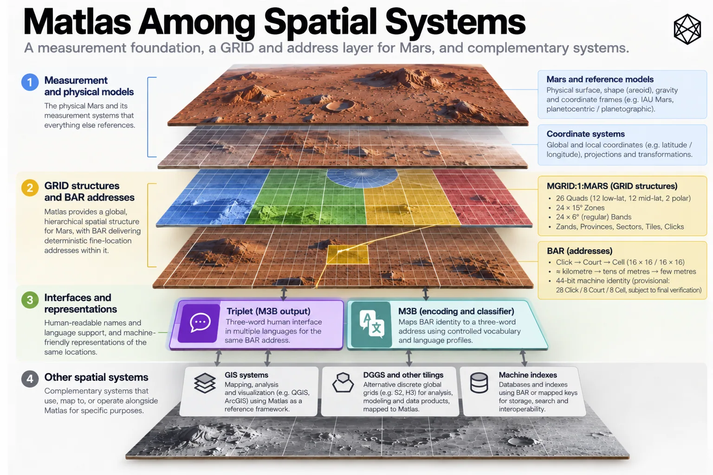

What Matlas Gives Up
Trade-offs, Scope and Open Questions
Every architecture looks impressive if you score it only on the things it was designed to do well. The more revealing test is what it gives up to get there.
Matlas has made a sequence of choices. GRID uses direct angular geometry and a relatively small civil hierarchy. It freezes spatial identity rather than allowing it to move with improving scientific models. It keeps most of Mars geometrically simple and accepts a change of behaviour near the poles. BAR stops at a few metres rather than pursuing engineering precision. Triplet gives humans a word interface rather than asking everyone to speak machine identifiers. None of those choices is free.
Other spatial systems can produce better geometry, shorter identifiers, easier neighbour operations, better statistical properties or greater precision. Local addresses will often be better for ordinary life. Specialist machine indexes may be dramatically better for computation. That is not a problem to explain away. It is what architecture looks like once the sales presentation is over.

Read a description of this illustration
Matlas is a supplemental shared reference and addressing substrate. It does not replace coordinate frames, official feature nomenclature, scientific gridding, GIS, specialist navigation or local property and administrative boundaries.
The question is not whether Matlas is the best spatial system. There is no such thing. The question is whether it is a good answer to the requirements we started with.
This is the chapter where we find out.
The costs we chose
The clearest compromise is geometric. GRID is not equal-area.
Below 72°, its fixed angular divisions mean that the physical width represented by longitude decreases with latitude. A Click nearer the top of Regular GRID therefore covers less surface than an equivalent Click near the equator. P1 improves polar proportions above 72°, but its objective is to prevent increasingly absurd shapes, not to make every unit on Mars identical in area.
If your main job is comparing quantities per square kilometre, this matters. Counting ten Clicks in one part of Mars does not guarantee the same physical area as counting ten somewhere else. An equal-area DGGS solves that problem more naturally.
Matlas chose otherwise because the civil layer placed greater weight on direct angular relationships, understandable boundaries, persistent hierarchy and independent reconstruction. That is the trade: unequal area is a cost.
The 72° transition is another.
Most of Mars follows one simple subdivision regime. At 72° north and south, GRID changes to adaptive polar branching. The transition produces a visible discontinuity because the system has changed geometric strategy at a particular latitude rather than gradually changing it everywhere.
There are more elegant alternatives. Adaptation could begin much earlier and vary continuously. A different global tessellation could distribute distortion across the sphere. A polyhedral architecture could avoid this particular seam entirely while introducing different ones elsewhere.
GRID keeps the regular planet simple and pays for that simplicity at one conspicuous boundary. The threshold is therefore not a natural law of Mars. It is a design judgement about where fixed longitude has become operationally poor enough to justify changing the rule.
I think that remains the right trade. It is still a seam.
P1 itself adds a third cost. Adaptive longitudinal branching means polar units do not always line up with the regular one-to-one neighbourhood pattern of a rectangular lattice. T-junctions appear. One unit may touch more than one neighbour along an edge. Containment remains deterministic, but adjacency becomes less convenient.
That distinction is important for software. If your primary problem is finding which Cell contains a coordinate, GRID is fine. If your primary problem is repeatedly walking a graph of neighbouring global cells, a specialist tessellation with uniform topology may be considerably better. Matlas prioritised containment because civil identity depends on it; it did not make uniform adjacency foundational.
This is also why GRID is plainly not the best possible computer grid. A machine-first spatial index has no reason to expose Quad, Zand, Province, Sector, Tile and Click as a humanly legible civil hierarchy. It can optimise much harder for compact identifiers, recursive resolution, data locality, neighbourhood queries and high-volume computation.
Some mature spatial indexes already demonstrate how powerful that approach can be. A future Martian computing platform may well use one internally, while still carrying a GRID identity when persistent civil reference matters.
BAR makes the same kind of compromise lower down. Its few-metre Cell is intentionally cruder than precision navigation, surveying or robotics. A rover may know its pose to centimetres while inhabiting a BAR Cell several metres across. That is not a failure of resolution; it is where BAR chooses to stop.
Making universal Cells much smaller would increase precision while solving a problem that specialist systems already solve better. Making them much larger would weaken the value of the address for emergency response, equipment location and exact delivery. Few metres is a civil-operational judgement. Real use may eventually tell us that four metres was slightly too much or too little. The choice is reasoned; it is not a physical constant.
Triplet carries a different sort of cost. Machine identifiers do not care about accents, familiarity, homophones, spelling or memory. Human words care about all of them.
Three words make BAR speakable by introducing the untidiness of language. A tightly curated vocabulary improves distinction while reducing lexical freedom. A larger vocabulary buys capacity and creates more opportunities for confusion. Three words are shorter than four and place more pressure on each lexical position.
There is no free configuration. Triplet chooses a balance, and whether people actually like that balance remains an empirical question.
One final trade is quieter but worth recording. Persistent civil identity creates maintenance work. Freezing GRID to a civil reference realisation prevents scientific improvements from silently moving addresses, but future scientific coordinates then need reliable transformations back into that frozen frame.
Persistence protects history by creating an obligation to preserve the bridge to it. That is a cost worth paying only if persistent civil identity is genuinely worth having.
Matlas assumes that it is.
One layer among several
The trade-offs become much easier to judge once Matlas’s scope is equally clear.
Its basic architecture remains:
measurement → persistent spatial identity → governance and culture
Matlas occupies the middle.
Coordinates and scientific reference frames remain underneath it because they measure position more fundamentally and, where necessary, much more precisely. Matlas is built from that measurement layer; it cannot sensibly replace its own foundation.
Terrain remains separate because an address does not describe the physical route to it. Two neighbouring BAR Cells might be only metres apart in plan view and separated by a cliff. One could lie on a gentle plain while another crosses terrain no sensible rover would attempt.
BAR tells you where. Terrain and navigation help determine how to get there.
GIS remains separate because Matlas is not an analytical environment. A Martian GIS might combine geology, elevation, infrastructure, hazards, population, GRID boundaries, BAR-addressed assets and political overlays in one application. Matlas supplies some of the references; the GIS does the analysis.
DGGS and specialist machine indexes remain separate for the opposite reason: they may solve computational geometry better than GRID does. Equal-area analysis, deep recursive indexing, regular neighbour operations and enormous spatial datasets can justify geometries with very different priorities.
Coexistence is not a consolation prize. It is the intended architecture.
The same discipline applies above Matlas. A cadastral parcel is a legal object. It may follow GRID boundaries if that proves convenient, or cut diagonally across them if that better describes a legitimate property interest. Nothing in the Click determines who owns it.
A political jurisdiction may contain whole Provinces, fractions of Sectors or an irregular territory bearing little resemblance to GRID. Emergency services, utilities and transport operators can draw different operating regions over the same ground and change them whenever their organisations change. GRID stays put. Their boundaries do not have to.
Local addressing is perhaps the easiest case. A mature settlement will develop buildings, entrances, corridors, streets, districts and conventions appropriate to the place that actually gets built. Those local addresses will usually be much better for ordinary human conversation than a global technical address.
If somebody invites you to 14 Copernicus Lane, asking for the BAR Cell before agreeing to dinner would indicate a technically impressive but socially questionable deployment of Matlas.
BAR remains useful underneath. The local address can resolve to the common Cell when software, emergency services or external organisations need it.
Cultural names sit further away still. GRID and Triplet do not name Mars in the human sense. A settlement name, a memorial, an unofficial district or a café nickname can acquire meanings no formal address architecture should try to create.
The important property is not that all these systems share boundaries. It is that they can refer to the same place.
Universal coverage does not require universal use. Every point on Mars can have a Matlas identity. Most conversations will not need one.
What is actually unfinished?
Once deliberate trade-offs and deliberate exclusions are removed from the pile, the remaining open issues become much easier to understand.
The first is a genuine limitation:
Matlas is two-dimensional.
GRID identifies areas of the Martian surface. BAR refines them into few-metre surface Cells. Neither presently distinguishes two destinations sharing the same horizontal footprint but occupying different heights or depths. That will eventually matter.
Permanent Mars may contain mines, tunnels, lava tubes, buried habitats, multi-level industrial sites and vertically dense settlements. A BAR Cell could identify the entrance or surface footprint while failing to distinguish a control room twenty metres below another facility at the same horizontal location.
The obvious response is to append altitude. The sensible response is to resist doing that until the requirement is understood.
A universal vertical address has choices of its own. What is zero? Is depth absolute or local? Should a mine use geometric height, named levels or a topological tunnel network? How should a global vertical reference interact with construction datums inside habitats?
Adding another field is trivial. Deciding what it means is architecture.
So two dimensions are a known scope limit. A future vertical or subsurface layer is a possible extension, not a missing line in the current specification.
Polar adjacency belongs in a different category. P1’s T-junctions are an accepted geometric trade-off. A complete normative neighbour API across them is unfinished interface work.
That distinction is useful because the geography already exists. Every coordinate has one owner. Bounds can be reconstructed. Existing identities do not depend on having a function that returns a perfectly specified list of neighbouring units. Such an API would be valuable for routing and analysis, but it can be added without moving a Click.
The most important unfinished evidence concerns humans.
Matlas can prove coverage, test boundaries and reproduce machine identifiers. It cannot prove that people will find six GRID levels intuitive, that few-metre Cells are the ideal practical resolution or that Triplet will work as well in real radio traffic as it does on paper.
Those are human-factors questions. They require human beings.
Orientation, learning time, recall, transcription, radio noise, stress, different accents, speech recognition and error recovery can all be tested. Until that happens, the human-facing choices should be described accurately: designed for usability, not proven usable.
The layered architecture gives us room to learn. If one mnemonic term performs badly, it can change without moving the geography. If one Triplet vocabulary creates too many confusions, a revised language profile can preserve the canonical Cell underneath. If emergency services eventually prefer a specialist phonetic interface, they can have one.
Human interfaces are allowed to improve faster than spatial identity.
Language profiles create related implementation work. English cannot simply be translated word-for-word into every other language and declared multilingual. Different languages have different phonology, morphology, frequencies, scripts and ambiguities. Each serious profile will require its own lexical design and testing while resolving to the same canonical BAR location.
That is work. It is not new geography.
Long-term governance also remains unfinished, but there is little value in attempting to solve it here. A durable standard will eventually need maintained specifications, reference transformations, version history, conformance material and institutions capable of preserving them. Chapter 21 owns that problem.
For this audit it is enough to record that good geometry does not create its own stewardship.
Keep the categories straight
So the unfinished ledger is considerably smaller than the old manuscript made it appear.
Unequal area is a chosen trade-off. The 72° seam is a chosen trade-off. P1’s awkward neighbourhood topology is a chosen trade-off; the neighbour API around it is unfinished interface work.
Specialist machine indexes outperforming GRID is not a defect. They solve another problem. Terrain-aware navigation, GIS analysis, cadastral ownership, political jurisdiction and local addresses are outside Matlas’s scope.
Two-dimensionality is a known limitation. Vertical addressing is a possible future extension. Human usability is an empirical question. Additional language profiles are implementation work. Long-term stewardship is institutional work.
Those distinctions matter because each calls for a different response. A design trade-off may require living with the cost. An interface can be added. An empirical question needs evidence. An external system should remain external.
A core geometric mistake, if one is ever discovered, would demand something more serious: a new major version rather than an invisible correction. A useful test is whether a proposed change alters which canonical Matlas identity belongs to a physical location.
If it does, it touches the core geography. If it does not, it can usually evolve around that stable centre.
That is how Matlas should be capable of learning without waking up one morning somewhere else.
Back to the brief
The right judgement therefore takes us back to the requirements that produced the architecture.
We wanted something anchored to Mars, exhaustive in coverage, coherent across several scales, persistent over time, thin enough to coexist with changing human geography, operational for machines and people, and reproducible without dependence on one provider. Those priorities explain the compromises.
Direct angular geometry aids legibility and reconstruction while surrendering equal area. A frozen civil frame preserves addresses while creating transformation work. P1 protects useful polar scale while weakening topological regularity. BAR provides common fine location without chasing engineering precision. Triplet makes the location speakable by accepting the complexity of language.
The scope remains thin enough that GIS, terrain, analytics, property, politics and local culture can continue solving their own problems.
These are not unfortunate imperfections surrounding some ideal version of Matlas. They are the consequences of choosing what to optimise.
Change the brief and the answer should change.
A climate-analysis architecture might start with equal area. A system built solely for machines could remove much of the visible civil hierarchy. A Mars permanently occupied by three isolated bases might never need a planet-wide operating geography at all. Different requirements should produce different systems.
That is requirements-led design working properly.
Matlas makes a narrower claim: for a Mars moving from exploration towards distributed settlement, there is value in a thin, persistent spatial layer between planetary measurement and the richer geography that civilisation will create above it.
The architecture has costs, and they are now explicit. Its boundaries are also explicit. Some human claims remain unproven, and some implementation and institutional work remains to be done.
Against the brief we began with, I think the trade is good.
That is the last defence this book needs to make.